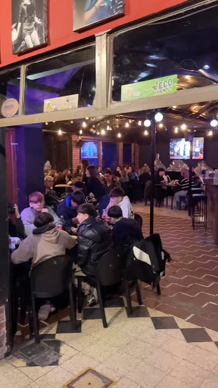

Villa Constitución · Rivadavia 958
La noche
tiene su
esquina.
Una birra, música y ganas de encontrarse. El plan sigue en Praga.

Foto del perfil público de Praga
Viernes a domingo · Desde las 20:00 · Villa Constitución
Música & encuentros
La próxima fecha,
a un vistazo.
Una agenda simple para elegir la noche y consultar por una mesa.
Módulo de agenda propuesto
Próximas fechas por confirmar.
No se cargaron shows pasados como si fueran próximos. Este espacio está listo para fecha, artista y una consulta de reserva cuando el negocio valide su agenda.
Ver novedades oficialesNos vemos acá
Rivadavia 958.
El resto, lo ponés vos.
Villa Constitución. Viernes a domingo desde las 20:00, según la biografía del bar. Consultá feriados y fechas especiales.
Ver ubicación¿Ya está armado el grupo?
Consultá disponibilidad y las novedades de la noche con Praga.